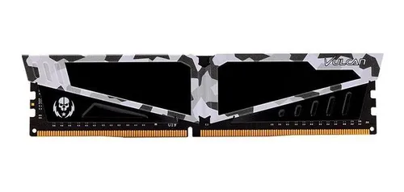

Computador Gamer, qual comprar?
Pensando em PC Gamer, qualquer um sem estudo pode achar que todos que achamos pela internet pode ser um de qualidade, porem na verdade não costuma ser assim, para entendermos o por que de um PC Gamer ter uma configuração boa para ser realmente um Gamer, vamos entender e estudar primeiramente as suas peças para montarmos uma máquina TOP!
Na prática, a principal vantagem do PC é a liberdade de escolha: você pode decidir construir uma máquina com componentes mais mundanos (e melhorá-la com o tempo)
E obviamente para o melhor custo benefício, vamos mostrar algumas peças mais limitadas, porém ótimas para uma montagem inicial supimpa!
Vamos começar pela Memória RAM
Para o seu PC, escolha pelo menos 8 GB de memória RAM. Dependendo do jogo, o uso da CPU é muito exigente e é necessária uma boa memória para atingir altas velocidades. Para plataformas de jogos mais exigentes, a porção de 16 GB é recomendada, mas somente se necessário, caso queira então um pouco mais a baixo, uma de 8GB é melhor do que acabar comprando duas de 4GB.

Team Group T-Force VULCAN Pichau RTB, 8GB, DDR4, 3000MHZ
Saindo por volta de R$300,00 as séries VULCAN suportam Intel® XMP 2.0. Apenas a um passo de experimentar a sensação de alta velocidade do overclock. A baixa tensão de operação do DDR4 VULCAN não apenas economiza energia, mas também reduz a temperatura e o calor gerado, permitindo que a memória de alta velocidade funcione de forma estável e duradoura. Várias verificações de compatibilidade com placas-mãe DDR4.

Gamer Husky Gaming, 8GB, 2666MHz, DDR4, CL19
Velocidade de 2666Mhz para o seu drama e por apenas R$223,00. Projetada para desempenho máximo, a memória Husky possui dissipadores de calor integrados que fornecem condutividade térmica ideal, permitindo que o sistema permaneça estável por longos períodos de tempo. Com 2666Mhz, garante maior velocidade e desempenho potente de computador de alta performance, oferecendo capacidade de 8GB com a tecnologia DDR4.
Placa de vídeo
Uma placa de vídeo é essencial para o seu PC rodar jogos de alta qualidade sem travar. Essa placa é responsável por acelerar a criação e renderização de imagens, vídeos e animações. E é muito rápido, deixando o processador livre para realizar outras funções.
Além de desempenhar a função básica de exibir imagens na tela, as placas gráficas também podem ser usadas para rodar jogos e softwares que exigem muito processamento visual. Ocasionalmente, a placa gráfica também pode ser usada como auxiliar em alguns programas, geralmente como "aceleração de hardware"

RX Radeon 6600
Na faixa de R$1859,00, é uma placa custo benefício para jogos competitivos, pois com sua tecnologia RDNA2, ela oferece a melhor experiência possível em 1080p nas configurações máximas, seu acelerador de raio AMD Infinity Cache melhora o desempenho e o ganho de Frames em diversos jogos é notável e além das outras tecnolgias como: DirectX Raytracing , Variable Rate Shading e a FidelityFX1 que melhoram a qualidade gráfica do jogo. Isso faz a RX Radeon 6600 ser uma das melhores opções do mercado nos dias atuais.
Processadores
O Processador é o "cérebro" do computador, sendo responsável por realizar os circuitos e processos de entrada, armazenamento de dados e processos de saída, o CPU é muito importante na área de games, pois ele é responsável pela taxa de quadros e configurações alteráveis nos jogos. A velocidade do clock das CPUs e a contagem de núcleos viabiliza a indicação dos recursos de desempenho, o que não deixa o computador mais potente apenas em jogos, mas também em Apps e no uso do Software. Muitos processadores possuem funções populares e muito utilizadas em outras áreas como gráficos integrados, que não necessita de uma placa de vídeo, e o overclock que aumenta o desempenho do Processador.

AMD Ryzen 5 3600, 6-Core, 12-Threads, 3.6ghz (4.2GHz Turbo)
Esse poderoso Ryzen 5 da 3º geração, que possui o núcleo Zen 2, capaz de ultrapassar um alto desempenho. Atualmente se